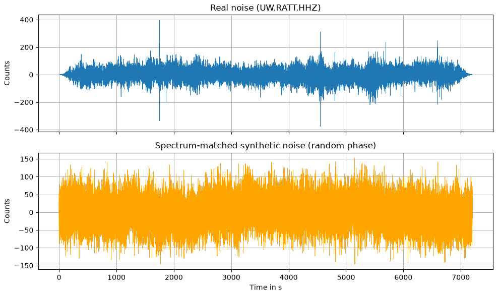
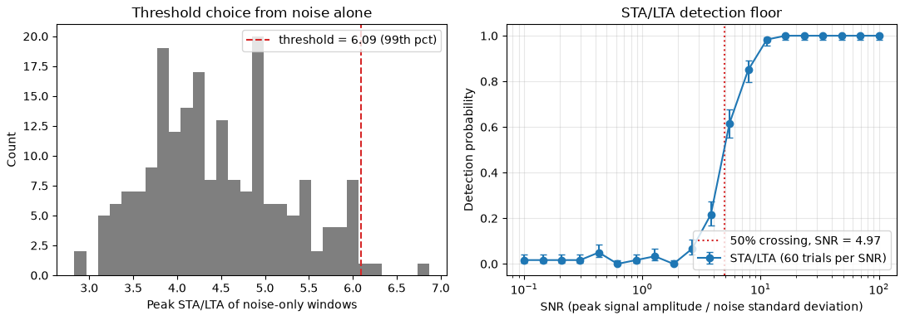
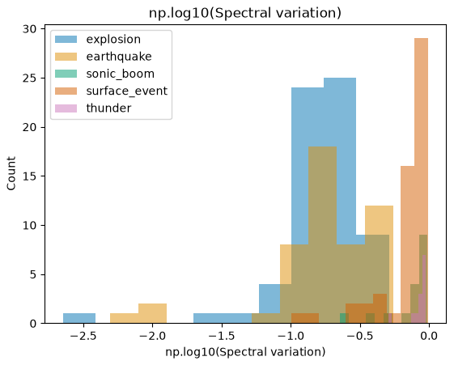

Session 9 · Mon Oct 19 · Book sections 2.10–2.11
🎛️
The Earth rarely tells you the answer.
How weak a signal can your detector actually see?
Reading: 2.10 Synthetic noise · 2.11 Feature engineering
📖 The classic detector this lecture grades: STA/LTA, still the operational baseline.
Allen, R. V. (1978). Automatic earthquake recognition and timing from single traces. Bulletin of the Seismological Society of America, 68(5), 1521–1532.
✓ Doing it right: the reference noise models that every synthetic noise spectrum answers to.
Peterson, J. (1993). Observations and modeling of seismic background noise. U.S. Geological Survey Open-File Report 93-322.
✗ Apparent seismicity-rate changes that were detection-threshold changes — physics claimed where the detection floor had moved.
Habermann, R. E. (1987). Man-made changes of seismicity rates. Bulletin of the Seismological Society of America, 77(1), 141–159.
✓ The real benchmark behind today’s features: the curated parent dataset of miniPNW.
Ni, Y., Hutko, A., Skene, F., Denolle, M., Malone, S., Bodin, P., Hartog, R. & Wright, A. (2023). Curated Pacific Northwest AI-ready Seismic Dataset. Seismica, 2(1). doi:10.26443/seismica.v2i1.368.
A 1978 detector, a 1993 noise model, one catalog cautionary tale, and the benchmark dataset this class touches today.
Synthetics are for grading methods; real data is for grading claims.

Top: two hours of real noise, station UW.RATT (Washington). Bottom: synthetic (mlgeo_synth) — same amplitude spectrum, new random phases. The statistics match; the waveforms line up nowhere.
6.09 detection threshold — 99th percentile of 200 noise-only trials
STA/LTA: short-term average over long-term average — spikes when a transient arrives. Pure noise reaches a median peak of 4.3; the 99th percentile sets a 1% false-alarm rate by construction, before any signal enters.
Set the threshold from noise alone, then measure detection — never tune the threshold on the signals you want to find.

Detection probability crosses 50% near SNR ≈ 5 and saturates above ~16. Below the floor, events exist but the catalog will not contain them.
1,720 real waveforms — Pacific Northwest, five source types
earthquake 500 · explosion 500 · surface event 500 · sonic boom 126 · thunder 94 — three components, 100 Hz, from the curated PNW dataset (Ni et al. 2023).
Not everything that shakes a seismometer is an earthquake — the label is the science question.

One engineered feature — spectral variation — histogrammed per class over 200 real miniPNW waveforms: 156 features computed in 25 seconds; the spectral ones separate best.
| Move | Known truth means… | Geoscience example |
|---|---|---|
| Grade an estimator | planted b = 1.0, recovered 0.998 | Gutenberg-Richter fitting |
| Grade a repair | intact record vs 185× ringing | gap filtering (Friday) |
| Grade a detector | planted events → floor at SNR ≈ 5 | STA/LTA, then CNNs in 4.3 |
| Augment training data | real noise statistics, unlimited copies | spectrum-matched noise |
Three lectures, one pattern: plant the truth, grade the method, disclose the synthetic.
pixi run jupyter lab → 2.10_synthetic_noise.ipynb2.11_feature_engineering.ipynb: extract features on miniPNW, rank by class separationWednesday: dimensionality reduction + the AI-ready checklist (2.12–2.13) · Reading-arc stage 1 due Wed · Friday: the critical-evaluation lab (6.2)
ESS 469/569 · Machine Learning in the Geosciences · Autumn 2026